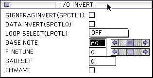

Return to previous page | Return to menu | Go to next page
● Saturn sequence data is created by the following operations.
A sequence bank can contain up to 512 sequences. A map can have multiple sequence banks. In M5 (Mega Drive), the sequence (song, SE) was specified by an absolute number starting from # 81, so for example, specifying # 85 always produced the same sound. However, Saturn's sequence is specified as “Map No.12, Sequence Bank No.3, Sequence No.4”.● In the process of creating a sound for a project, “Converting StandardMidiFile” and “Creating a sequence bank” must be performed many times. In this case, it is too bad to specify the file from the open window every time. Once the sequence file group used for “Convert StandardMidiFile” and “Create Sequence Bank” is set once, it can be recalled later in a list. This list is called a collect file, and can be saved and read from the "Collect file" submenu of the "File" menu. For details, refer to the Sound Simulator User's Manual.
▲ When you open the inverter window of the TONE editor, it looks like this.

Of these parameters, SPCTL1, SPCTL0, and FMWAVE are not normally used, so do not check them. SAOFSET is an abbreviation of Start AddressOFfSET and gives an offset to the value written to the Start Address of the PCM waveform. When using effects such as DSP chorus, this function is used to add an offset to the modulation waveform and sway the phase.
● Saturn's sound board or sound box has 5 sets and 8 sets of LEDs on the back. The five sets of LEDs can be in any lighting state. When the board is initialized after the power is turned on properly, the eight LED pairs begin to blink to flow from LED1 to LED8. This initialization usually takes about 2 seconds, but can often take up to 30 seconds. This is generally believed as a precursor to the board starting to fail. Disasters caused by Saturn's board may result in loss of SCSI communication with the MAC, the board itself may be damaged, or the hard disk of the MAC may be destroyed in the worst case.
● It was pointed out that the difference between the volume of the CD on the Saturn multiplayer screen and the volume of the CD-DA on the game is too large, which was a big problem than other departments. The explanation of the circumstances is avoided here, but as a precaution during production, when using CD-DA, set the CD-DA send level one level lower than the maximum value to balance the volume. When controlling from the main side, inform the main side of that fact, and make sure that the maximum parameter value is not output.